走查方式：Playwright 实机截图 1440×900 全页 + 390×844 窄屏共 20 张，并用旧系统本地副本同机对比。结论基于截图事实，不是凭代码猜测。
容器三档统一、平板图标条 + 手机抽屉、页签横滑、90 天日历 7 列、词库手机默认卡片视图、折叠箭头与「展开/收起」按钮、听力 Test 分组——全部完成。自动化检测 19 条路由 × 3 视口均无横向溢出，前端 75 tests + 构建通过。截图见 shots/p0-*.png；下方问题记录保留作为 P1 待办依据。
结构骨架（左侧学科导航 + 三级页签）方向是对的，但最后一公里没做完：内容容器宽度六个页面六种、移动端全面破损、折叠控件失效、字号与触控目标偏小、全白卡片没有层级。旧站设计并不高级，但它每一屏只做一件事、点得到、看得清——这几件基本功新站丢了。
旧站用本地副本 + 本地模式（admin/admin）登录后截取，与新站同一浏览器、同一视口。
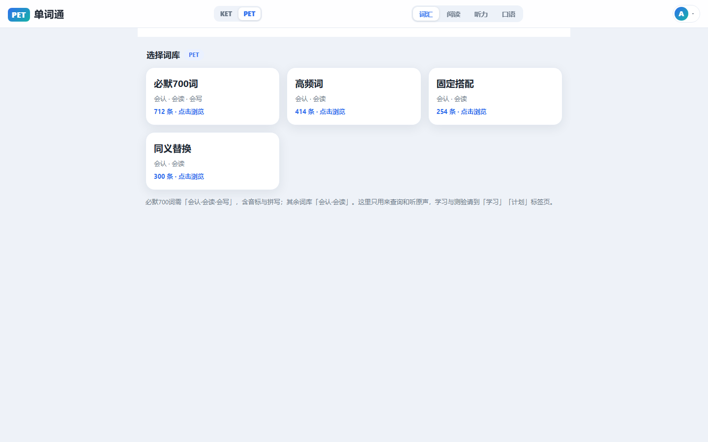
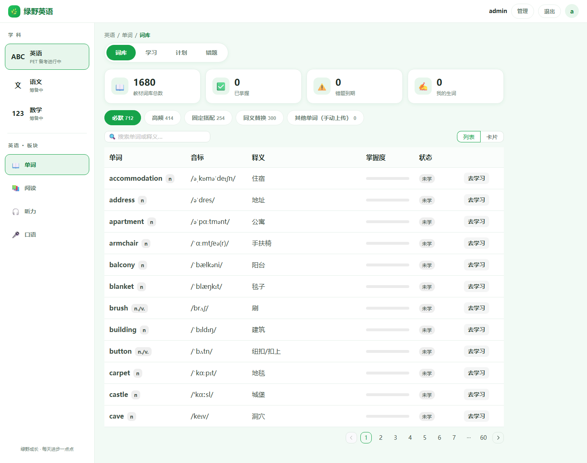
孩子很可能用平板或手机。390px 宽下新站基本不可用，旧站却还能正常操作。
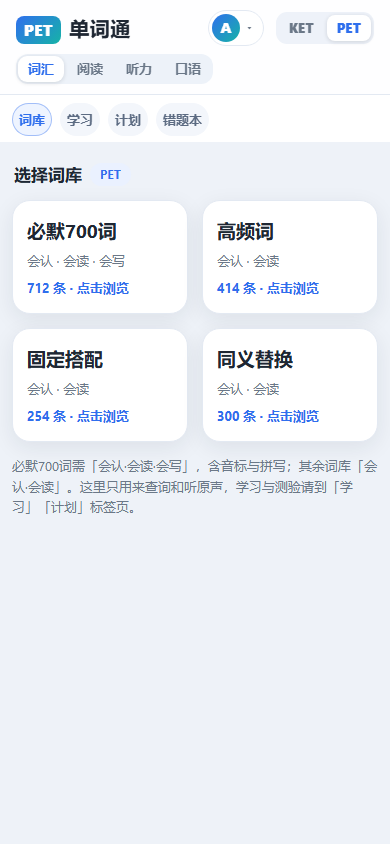
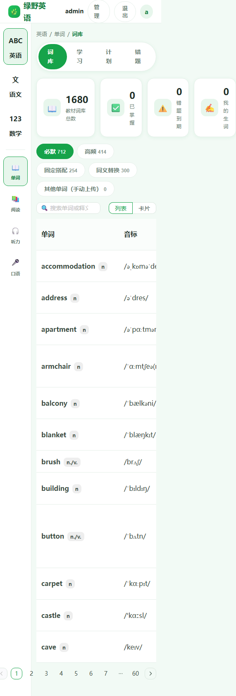
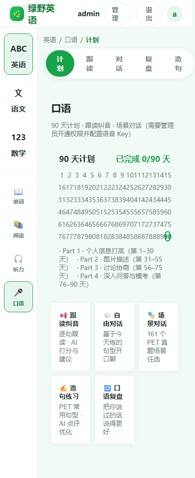
AppLayout.vue:160 媒体查询只缩宽度到 76px，.s-name 没隐藏 → 38px 图标 + 文字挤在 60px 里.tabs3 是 inline-flex 无 nowrap，5 个 tab 被压缩换行repeat(15, 1fr)，390px 下每列 16px → …9 101112131415repeat(3, 1fr) 被压到每卡 60pxn-data-table 未设 scroll-x.chip 缺 white-space:nowrap同一个站点里有 6 种内容宽度，而且每页自己还加了一层 padding。
| 宽度 | 页面 | 后果 |
|---|---|---|
| 640px | ReadingQuiz / SpeakReview / SpeakTalk / ListeningReview | 每页左边缘 x 坐标都不同；而面包屑与页签是左对齐的 → 视线每换一页就"错一下"。宽屏上右侧大片死白（见右图 300px 内容 + 700px 空白）。 |
| 680px | QuizPage / SpeakShadow / SentencePage / AddSentencePage | |
| 720px | PlanPage / ListeningHome | |
| 760px | ReadingHome / SpeakHome / AdminPage | |
| 820px | WordsMistakes / ReadingMistakes | |
| 980px | BrowsePage |
.page 880 / --wide 1120 / --narrow 640，全部居中，页内不再加 padding。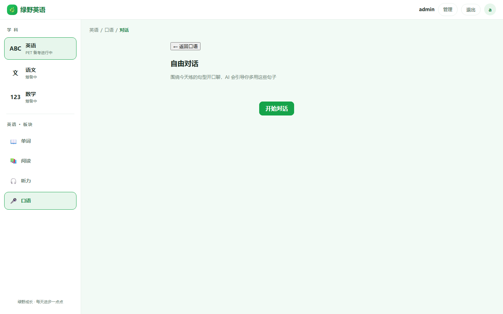
max-width:640 且 margin:0 auto 在 .main（已 padding 24px）之内居中 → 双重内边距阅读与听力的教材分组是核心入口，但箭头渲染成一个点，用户根本不知道该点哪里。
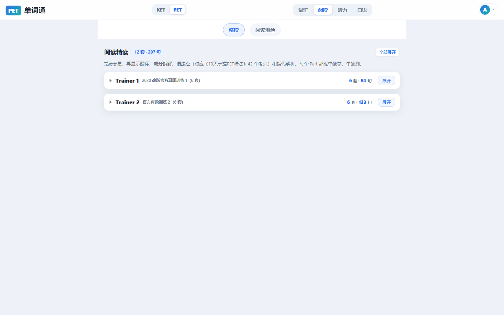
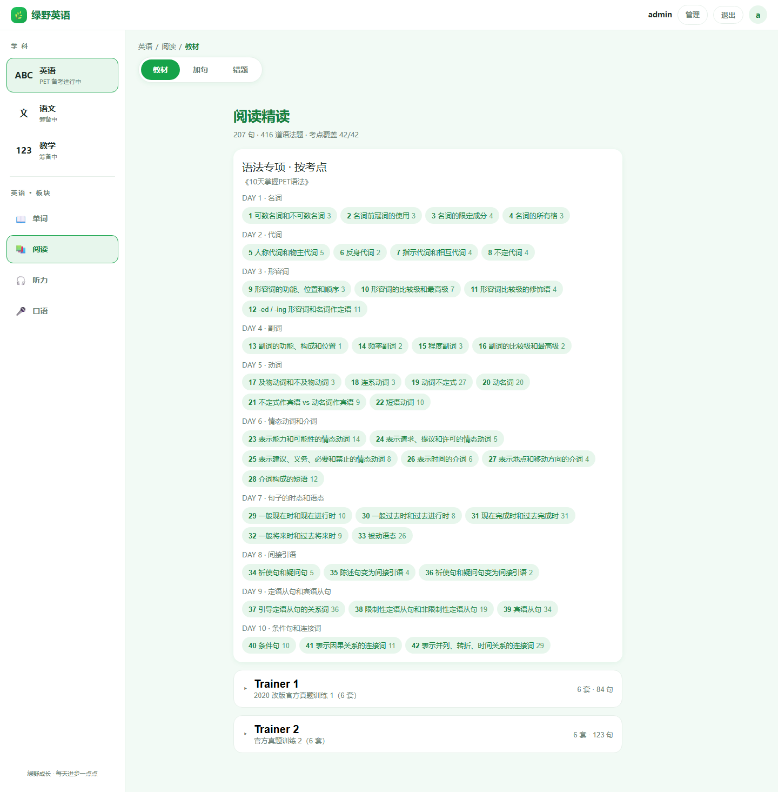
▸ 字符在当前字体下渲染成 2px 小点；无"展开"字样；听力页折叠头部宽度还与下方列表不一致。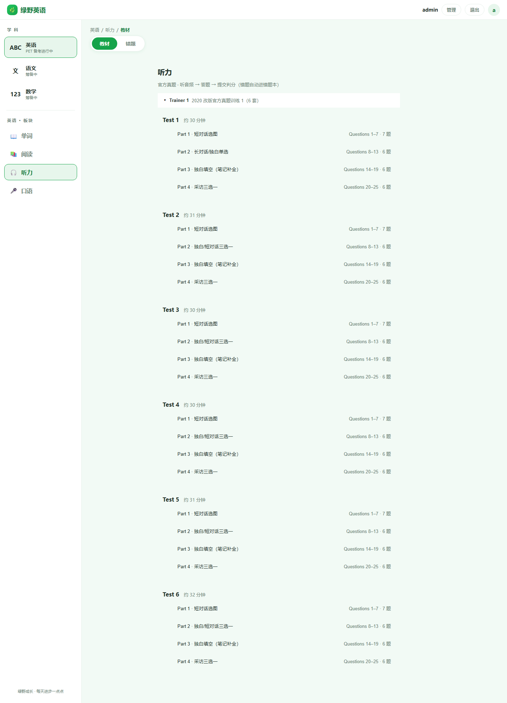
n-collapse（自带箭头/动画/无障碍），Test 作为二级折叠，Part 做成可点条目（右侧显示题数与「开始」）。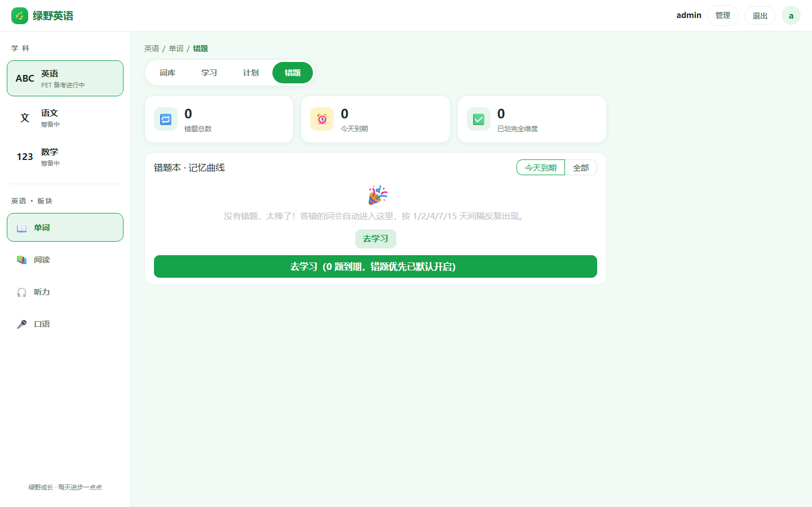
@vicons/ionicons5 线性图标（保留 🌱 仅作品牌位）；页面底色 #f7faf8；卡片只留两级；空状态只留一个主动作。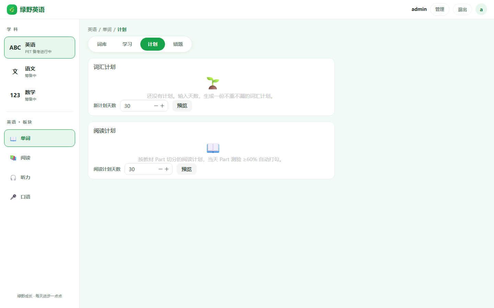
n-progress（8px + 百分比文字）；状态换 n-tag 三态；列宽固定。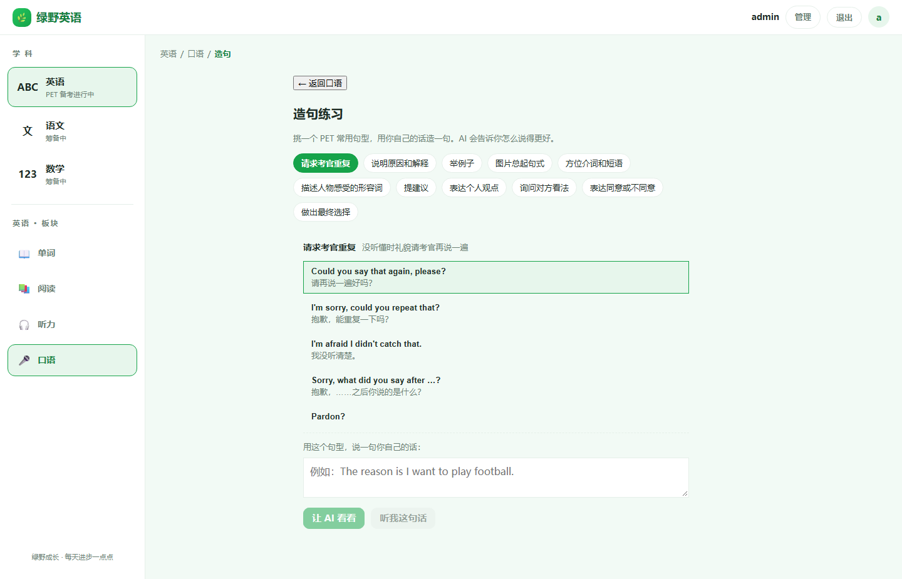
不是逐页"再调一调"，而是先把三条规则定死，页面改动才有收敛方向。
#f6faf7，禁卡中卡primary large · 次 secondary · 弱 quaternary，全站同一功能同一长相| 优先级 | 项目 | 做法 | 工时 |
|---|---|---|---|
| P0 | 移动端重建 | 侧栏抽屉 + 页签横滑 + 表格卡片化 + 日历周视图 + 入口单列 | 1 天 |
| P0 | 容器三档统一 | 删各页 padding/max-width，改 .page/--wide/--narrow（19 文件机械改） | 0.5 天 |
| P0 | 折叠控件 | 换 n-collapse 或 ChevronForward + 展开文字 + 过渡；听力 Test 二级分组 | 0.5 天 |
| P1 | 字号/触控 | token 上移一档，行高 48，可点区 ≥40px | 0.5 天 |
| P1 | 视觉层级 | 页面底色 + 两级卡片 + 统一线性图标 + 分区色 | 1 天 |
| P1 | 词库表格 | n-progress 掌握度 + n-tag 三态 + 固定列宽 | 0.5 天 |
| P1 | 空状态 + 按钮体系 | 空态卡与表单分离；按钮三层统一；保存改 n-message | 0.8 天 |
| P2 | 信息架构 | 面包屑两级；加句改浮动按钮；口语页签改名 | 0.3 天 |
| P2 | 阅读考点折叠 | 10 天手风琴，默认只展开当前天 | 0.5 天 |
| P2 | 深色模式（可选） | n-config-provider darkTheme + tokens 双套 | 0.5 天 |
合计约 6.5 人天；其中 P0 三项 2 天 就能让"能不能用"过关。每阶段结束用同一脚本重拍 20 张截图对比留档。
| # | 标准 |
|---|---|
| 1 | 390px：无横向滚动条、无文字竖排、页签单行可滑动、表格可用、日历可读 |
| 2 | 768px：侧栏为图标条，内容单列不溢出 |
| 3 | 所有页面内容左边缘 x 坐标一致（同一容器规则） |
| 4 | 折叠组件有可见箭头 + 展开/收起文字 + 过渡动画 |
| 5 | 正文 ≥15px，所有可点区域 ≥40×40px |
| 6 | 表格行高 48px，掌握度 0% 时仍可见（灰轨 + "0%"） |
| 7 | 全站图标同一套，功能区无 emoji 混入 |
| 8 | 空状态不与表单混排，且只有一个主动作 |
| 9 | 同一功能的按钮全站长相一致 |
绿野英语 v2 · 走查报告 v0.1 · 2026-11-22 · 截图存 pet-v2/docs/mockups/shots/